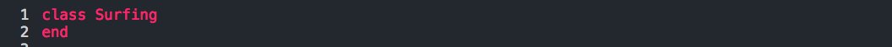
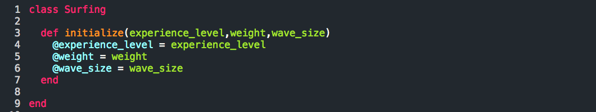
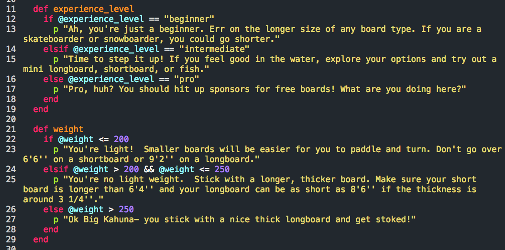
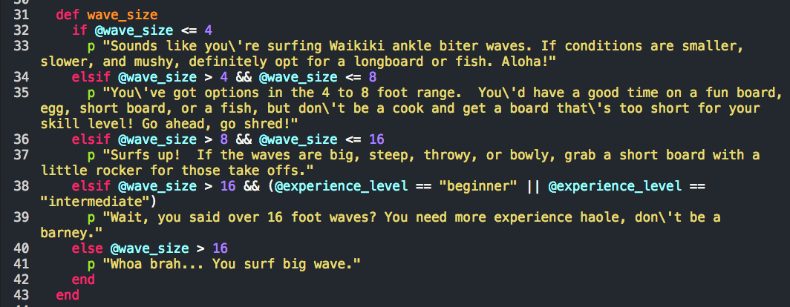
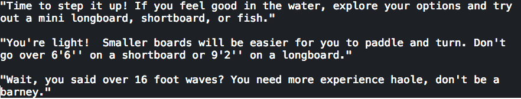

Let me just say that learning about classes in Ruby makes me feel like I'm really getting the computer to work for me. With the foundational understanding of strings, integers, and arrays- all of which are objects- it felt fairly intuitive constructing my first class.
You're going to opt for a class when you have to manage your data on a large scale with multiple methods. What I mean by that is better described by David A. Black, author of The Well Grounded Rubyist. In his words, "if you’re running an online box office and your database has to process records for tickets by the hundreds, you’ve got to find another way to create and manipulate ticket-like objects in your Ruby programs." Classes further simplify your life by allowing you to group methods into what Black calls "bundles".
Below I've outlined an example of how one might organize data about someone's surfing capabilities in order to determine what kind of board they need. Take good ole Rick, for example. He's a good surfer, but intermediate at best. He only weighs a buck fifty, but thinks he's going to charge big North Shore waves. So what kind of board does he need? First, let's create a class to bundle all of this information.

Once we've named our class, we'll initialize the instance variables we intend to use. We're going to need to know Rick's experience level, weight, and what size waves he plans to ride to give him the best advice on a board.

We want Rick to understand how his experience and weight affects board size- maybe after he spends some time training, we can reassign some of these variables.

Here is a unique situation: sometimes beginners don't have a sense for their limits and go for bigger waves than they are ready for. Just because Rick thinks he is capable of surfing pipeline, doesn't mean he's ready for it or that he should be riding a gun! Sometimes you just need to be called out and that's what this method does when wave size is over 16 feet and the experience level is either beginner or intermediate (line 38).

So what happens when Rick tries to get a new board after cracking his at pipe?

Here's our output:

What a barnyard! Good thing Chandler schools Rick on soul surfing and understanding what board he's capable of riding.